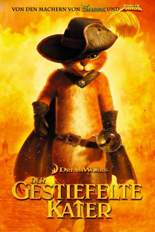

Alternativ: Puss in Boots
Auszeichnungen: für 1 Oscars nominiert
 
 IMDB-Wertung: 6.6 / 10
IMDB-Wertung: 6.6 / 10  Metascore:
Metascore: 
Der Gestiefelte Kater war nicht immer nur der getreue Wegbegleiter des tollkühnen Ogers Shrek. Schon vor ihrem denkwürdigen und folgenreichen Zusammentreffen im Wald von “Weit Weit Weg” hat der selbstbewusste Kater aufregende Abenteuer erlebt. Damals war der Gestiefelte Kater noch mit seinem Kumpel Humpty Dumpty unterwegs – bis dieser den stolzen Kater skrupellos verriet. Jahre später triff der Kater wieder auf seinen ehemaligen besten Freund, der gerade dabei ist, mit der rassigen Kitty Softpaws einen waghalsigen Plan auszuhecken: Sie wollen die Gans stehlen, die goldene Eier legt. Das ist allerdings leichter gesagt als getan, wie das widerwillig vereinte “Trio Infernale” nur allzu schnell feststellen muss ...
Jahr: 2011
Dauer: 90 Minuten
FSK: 0
Land: USA Studio: Paramount PicturesTonspuren: DD5.1 - ,
Untertitel:
Auflösung: 1080p (1920x816) Größe: 2856 MB
Genre: Animation/Trick, Action, Abenteuer, Komödie, Familie, Fantasy
Regisseur: Chris Miller
Drehbuch: Tom Wheeler, Brian Lynch, William Davies, Tom Wheeler, Charles Perrault
Soundtrack: Henry Jackman
Darsteller:
 Antonio Banderas als Puss in Boots
Antonio Banderas als Puss in Boots Billy Bob Thornton als Jack
Billy Bob Thornton als Jack Amy Sedaris als Jill
Amy Sedaris als Jill Guillermo del Toro als Moustache Man / Comandante
Guillermo del Toro als Moustache Man / Comandante Conrad Vernon als Raoul / Soldier
Conrad Vernon als Raoul / Soldier Bob Joles als Giuseppe
Bob Joles als Giuseppe Chris Miller als Little Boy Blue / Friar Miller / Prison Guard / Manuel / Rafael
Chris Miller als Little Boy Blue / Friar Miller / Prison Guard / Manuel / Rafael Joshua Rush als Additional Voices , uncredited
Joshua Rush als Additional Voices , uncreditedDatei: X:\Kinder Filme (G-M)\Gestiefelte Kater, Der (2011, FSKo.Al., 1920x816) 3D.mkv seit 16.03.2015
Festplatte: Kinder-Filme+Trick
 Es gibt insgesamt 84 Filme in der Gruppe 'Kinder Filme (G-M)'
Es gibt insgesamt 84 Filme in der Gruppe 'Kinder Filme (G-M)'